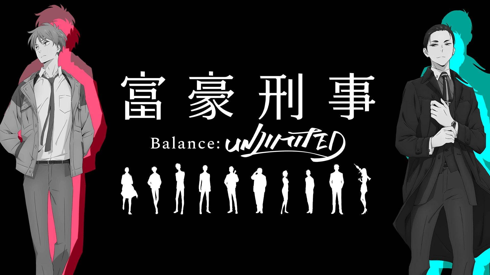
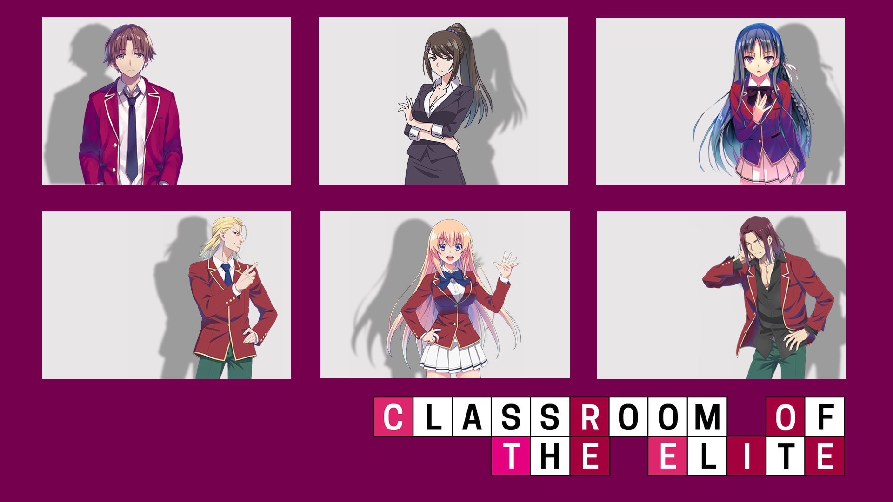
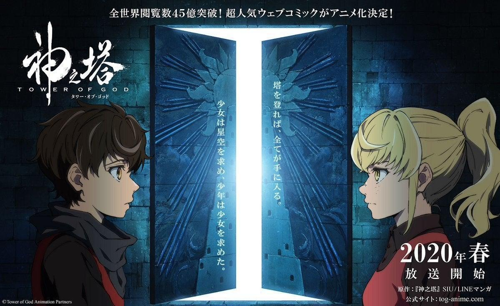
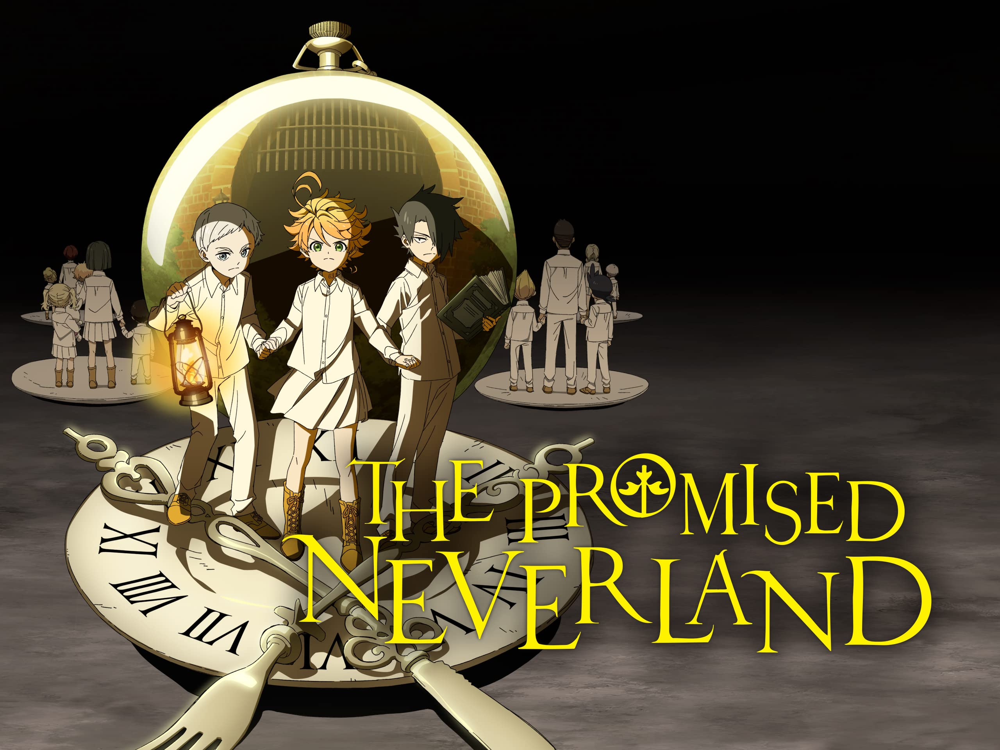

The Millionaire Detective - Balance: Unlimited
Daisuke Kambe, a brilliant and eccentric millionaire, joins the Modern Crime Prevention Task Force. With seemingly unlimited resources, he approaches every case in an unorthodox manner, much to the chagrin of his partner, Haru Kato. Together, they delve into a series of high-stakes crimes and mysteries that take them into the world of power, wealth, and corruption. As they pursue justice, Daisuke's enigmatic past and Haru's unwavering dedication are put to the test, making for an intense and thrilling crime-solving anime.
Classroom of the Elite
In a prestigious private school known as Koudo Ikusei Senior High School, students are ranked based on their academic achievements. Kiyotaka Ayanokouji, a seemingly indifferent and aloof student, is placed in Class D, the lowest rank. However, he soon discovers that this class is no ordinary one; it serves as a social experiment where students must strategize and outwit each other to rise through the ranks. As Kiyotaka navigates the cutthroat world of high school politics, he forms unexpected alliances and faces moral dilemmas that challenge the very fabric of this elitist society.
Back to Top ↑Tokyo Revengers
Takemichi Hanagaki's life has hit rock bottom when he learns that his former girlfriend and her brother were murdered by a vicious gang known as the Tokyo Manji Gang. Suddenly, he finds himself traveling back in time to his middle school days, a chance to rewrite the tragic events. Determined to save his loved ones, Takemichi embarks on a dangerous journey, rejoining the Tokyo Manji Gang in hopes of changing the future. Through relentless determination and unwavering courage, he battles rival gangs and uncovers dark secrets, all in the name of altering destiny and preventing the tragedy that befell his friends.
Tower of God
Bam, a young boy without memories, enters the mysterious Tower, a colossal structure that promises to fulfill any desire at its peak. In search of his friend Rachel, he faces a series of grueling tests on each floor of the Tower, where only the strongest ascend. Along the way, Bam befriends other irregulars like himself and confronts formidable foes while learning about the Tower's secrets and its powerful, god-like administrators. The journey to the top is perilous and unforgiving, but Bam's determination to find Rachel and uncover the truth fuels his determination to reach the summit.
Back to Top ↑The Promised Neverland
In the Grace Field House, Emma, Norman, and Ray lead a blissful life with other orphans under the care of "Mother." However, their utopian existence shatters when they discover the dark truth behind their home. Grace Field House is a farm where children are raised as food for mysterious demons. Determined to escape, the trio devises elaborate plans while avoiding the watchful eyes of their caretaker and the terrifying creatures outside. With each twist and turn, they must outwit the adversaries and unravel the mysteries of their world to secure their freedom and the survival of their fellow orphans.